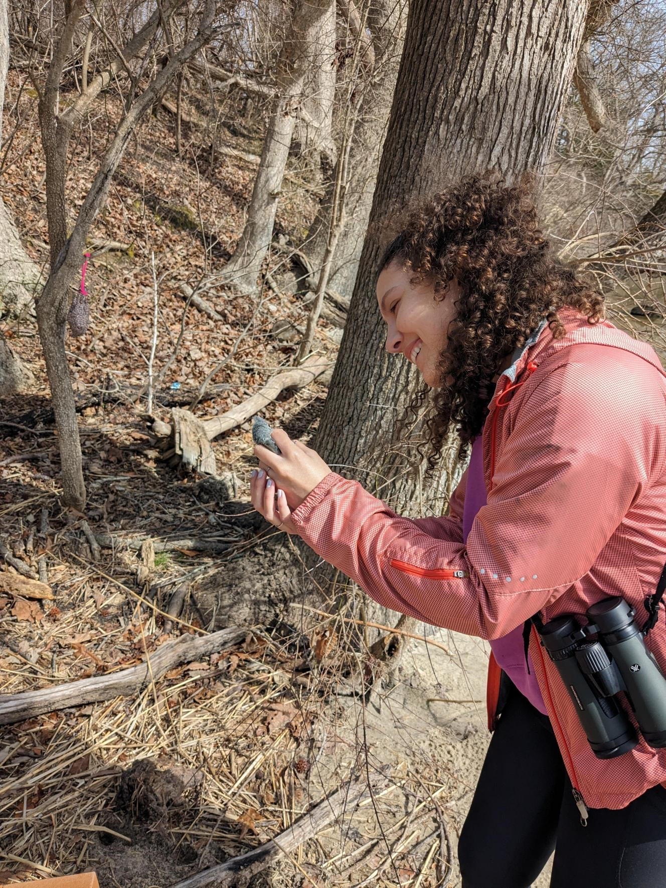

Birding isn’t just a hobby anymore; it is a powerful way for the public to contribute to science. Through community science, everyday birders can contribute to biodiversity monitoring as they document bird populations. But not all observations are created equal, especially across different birding platforms and surveys. Differences in how, when, and why people record birds can introduce bias into these datasets, shaping the story the data tells.
In this blog, I will explore the biases found in popular birding platforms and surveys, and how they shape community science data. The platforms and surveys mentioned in this blog include the following:
| Platform/Survey | Description | Sampling design |
|---|---|---|
| iNaturalist | iNaturalist is a multi-taxon community science project from the California Academy of Sciences. | Less-structured (Callaghan et al. 2021) |
| eBird | eBird is a strictly birding community science project launched by the Cornell Lab of Ornithology. | Semi-structured (Callaghan et al. 2021) and less structured compared to BBS (Scher and Clark 2023) |
| Breeding Bird Survey (BBS) | The BBS is an annual birding survey in the United States and Canada. | Most structured (Scher and Clark 2023) |
Observer Bias
In the paper “Large-bodied Birds Are Over-represented in Unstructured Citizen Science Data” (Callaghan et al. (2021)), the authors examined bird observations from two birding platforms: iNaturalist and eBird. They categorize iNaturalist as an unstructured community science platform and eBird as a semi-structured platform. Their motivations were to investigate how differences in sampling efforts and design, from structured to unstructured, influence the birds represented in the data.
The authors found that both platforms introduce observer bias, or systematic differences in how observers record birds (Konno et al. (2024)). On iNaturalist, observations tend to be “opportunistic,” with users recording only species they encounter and find interesting. This means large, common, or charismatic birds are overrepresented, while small, fast, or cryptic species are underreported. In eBird, avid birders often seek uncommon or rare species to add to life lists, which similarly skews the dataset toward species that are easier to detect or more desirable to report. As one eBird user noted in a community discussion post on Facebook: “Never forget that eBird is not a record of where birds are. It’s a record of where birders are.”
Sampling Bias
Sampling design further shapes the patterns in these datasets. Not all bird observations are collected the same way, and differences in protocols influence what gets recorded. On iNaturalist, users must submit a photo for an observation to be considered “research-grade.” This requirement favors species that are easy to photograph and contributes fewer overall observations to the Global Biodiversity Information Facility(GBIF), since only research-grade records are included. eBird, in contrast, incorporates all submissions but encourages birders to visit “hotspots” (locations known for high species richness or a rare life list bird). As a result, areas like wetlands, refuges, and parks are heavily sampled, while everyday places such as neighborhoods or farmland are underrepresented. These design choices introduce bias in both platforms, creating uneven coverage across species and habitats and limiting the scope of the data.
In a similar study, Scher and Clark (2023) compared the sampling designs of eBird and the Breeding Bird Survey (BBS). They defined eBird as a less structured platform in comparison to the BBS. Their statistical models indicated that both common and less “popular” species were reported less frequently in eBird than in the BBS, primarily due to differences in survey protocols. The BBS employs fixed routes and timed protocols, which limit the range of data compared to eBird, but yield more reproducible results. Similar to the findings of Callaghan et al. 2021, eBird reports a larger total number of observations, but this does not necessarily translate to more complete information. Without considering the sampling design and observer behavior, analyses based solely on eBird data may misrepresent species distributions or population trends.
Challenges in Community Science
Both studies highlight how sampling design and observer behavior shape what ends up in the data. Although these distinctions appear harmless, they can lead to the way that biodiversity is monitored and which species get priority for conservation. For instance, rare or charismatic species often attract more public interest, which can translate into disproportionate conservation funding (the charismatic megafauna bias). These underlying biases mean that community science datasets can distort estimates of species distributions, population trends, and community composition.
Another important impact of these biases is that it informs how and who uses the data. While there is an increasing interest in using community science data to broaden the range of data collection and address diverse ecological questions, researchers often hesitate to adopt this data due to concerns about its quality stemming from these biases (Callaghan et al. 2020). For one, community science is limited spatially and temporally. Much data is collected during specific times, such as weekends and peak migration seasons, and primarily in public spaces. This creates an uneven representation, with birding observations skewed towards hotspots and even more common in affluent and predominantly white neighborhoods (Ellis-Soto, Chapman, and Locke (2023)). Consequently, the data from these projects can distort the estimate of biodiversity within these communities.
Opportunities for Community Science
Despite these challenges, community science data plays a crucial role in bridging the gap between scientists and the public. As Young et al. (2014) note, communication between scientists and policymakers is riddled with challenges, but growing public interest in biodiversity conservation can help bridge that gap. When individuals actively engage in biodiversity monitoring, it produces public awareness and interest in conservation issues. As the saying goes, politicians serve the public; thus, heightened public demand for biodiversity conservation may encourage policymakers to listen to scientists more often. This interaction highlights the importance of addressing biases in data collection while recognizing the potential of community science to facilitate meaningful conversations around conservation.
Final thoughts
As I explore the biases present in community science data, I continue to discover multiple biases at play. This suggests that biases often do not operate in isolation; typically, one bias can lead to another (for example, sampling design can influence observer bias). So, what is the solution? Should we only utilize data from sampling designs with stricter protocols such as those in the BBS? Or will that narrow the scope of the data by neglecting the abundance of data from eBird and iNaturalist? How can I, as a data scientist, effectively use the vast amount of biodiversity data that contains these biases? The answer is not simple and can range depending on the use of the data. Callaghan et al. 2021 encourages the use of statistical models to adjust for data that comes from different sampling designs. This can help you integrate multiple datasets, eliminating the bias before merging. Ultimately, understanding the limitations and context of the data at hand is crucial. The data can only be what it is, which means being aware of the variables included in the dataset as well as those that are not. And it’s important to question why certain variables were included or excluded from the study altogether. Through these adjustments, we can produce more accurate interpretations and applications of biodiversity data, paving the way for more informed ecological understanding and conservation efforts.
Personal statement

For nearly four years, I have enjoyed birding as a hobby, participating in community science projects like the Christmas Bird Count and Big Days, and even leading groups in the field. I regularly use apps such as eBird and iNaturalist to document my sightings. Reflecting on my habits, I realize I tend to prioritize recording the exciting birds (like most birders) while overlooking common ones. I also admit to favoring locations where I might spot a new life list bird (it was a Pileated Woodpecker!). Moving forward, I plan to be more intentional about documenting all species, common and rare, to eliminate bias from my birding observations and contribute more accurate data.
References
Citation
@online{segarra2025,
author = {Segarra, Isabella},
title = {The {Bias} in {Birding}},
date = {2025-12-10},
url = {https://isabellasegarra.github.io/posts/ethics-blog-post},
langid = {en}
}